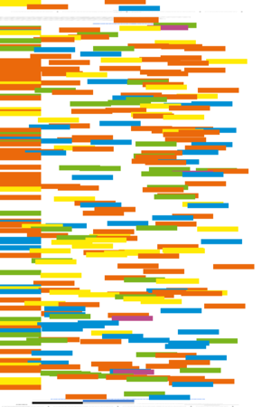

The behaviour/practice debate: a discussion prompted by Tom Wilson's review of Reijo Savolainen's Everyday information practices: a social phenomenological perspective. Lanham, MD: Scarecrow Press, 2008.
Watch this: LOD - linking open data — one of a series of occasional columns by Terrence A. Brooks of the Information School, University of Washington, USA.
Reviews
 Harrington, Richard iWork '09 Berkeley, CA: Peachpit Press, 2009.
Harrington, Richard iWork '09 Berkeley, CA: Peachpit Press, 2009.
Sankar, Krishna & Bouchard, Susan A. Enterprise Web 2.0 fundamentals. Indianapolis, IN: Cisco Press, 2009.
Conference announcements
Check the other resources available at InformationR.net - free resources for information researchers. If you find Information Research useful please sign in and we'll notify you of future issues.
Contribute ideas and links to relevant resources on the Weblog. Join at http://info-research.blogspot.com